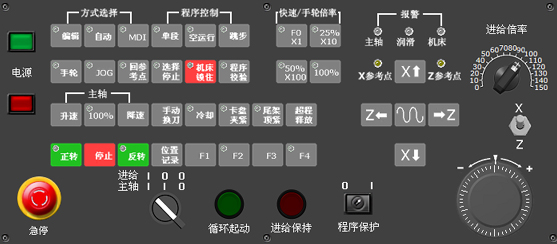
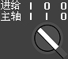
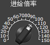

| 济南机床厂FANUC 0i Mate-TB |
| 返回<<< |
|
 方式选择：编辑/自动/MDI/手轮/JOG/回参考点 程序控制：单段/空运行/跳步/选择停止/机床锁住/程序校验 主轴控制：升速/100%/降速/正转/停止/反转 手动换刀/冷却/卡盘夹紧/尾架顶紧/超程释放/位置记录 手动X/Z轴进给 快速进给倍率 电源开/关 急停 进给主轴 循环起动 进给保持 程序保护 手轮 手轮轴选择 进给倍率 主轴/润滑/机床报警 X参考点指示灯Z参考点指示灯
|